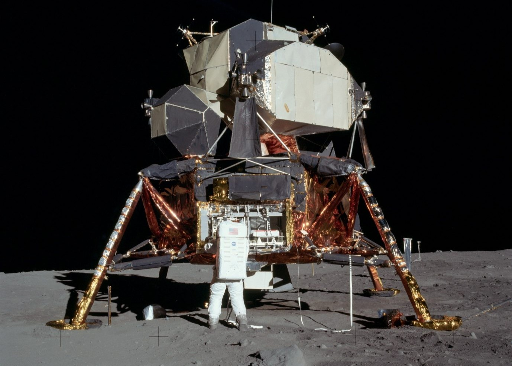

Home / The Moon / Apollo Lunar Modules
Apollo Lunar Modules
The spidery landers whose lower halves became launch pads.
The Moon1969-1972Six landing sites

At a glance
| Builder | Grumman Aircraft |
|---|---|
| Crew | 2 astronauts |
| Height | about 7 m with legs extended |
| Mass | about 15,000 kg fully fuelled |
| Longest stay | about 75 hours (Apollo 17) |
Overview
The Lunar Module was only practical because of lunar orbit rendezvous: instead of landing a huge rocket, NASA landed a small ship while the main spacecraft waited in orbit. The module was so light that its walls were thinner than a few sheets of paper in places, and it never had to fly in Earth's atmosphere, so it did not need a smooth, aerodynamic shape. The landing legs used crushable aluminium honeycomb to absorb the shock of touchdown.
The Apollo 11 Lunar Module (LM) "Eagle" was the first crewed vehicle to land on the Moon. It carried two astronauts, Commander Neil A. Armstrong and LM pilot Edwin E. "Buzz" Aldrin, Jr., the first men to walk on the Moon. Also included on the LM was the Early Apollo Scientific Experiment Package (EASEP), which consisted of several self-contained experiments to be deployed and left on the lunar surface, and other scientific and sample collection apparatus.
Where it began
Built by Grumman, the Lunar Module was designed for one job: carry two astronauts from lunar orbit to the surface and back. It was a two-part craft, a descent stage with the landing engine and legs, and an ascent stage holding the crew cabin.
The lunar module was a two-stage vehicle designed for space operations near and on the Moon. The spacecraft mass of 15103 kg was the total mass of the LM ascent and descent stages including propellants (fuel and oxidizer). The dry mass of the ascent stage was 2445 kg and it held 2376 kg of propellant. The descent stage dry mass (including stowed surface equipment) was 2034 kg and 8248 kg of propellant were onboard initially. The ascent and descent stages of the LM operated as a unit until staging, when the ascent stage functioned as a single spacecraft for rendezvous and docking with the command and service module (CSM). The descent stage comprised the lower part of the spacecraft and was an octagonal prism 4.2 meters across and 1.7 m thick. Four landing legs with round footpads were mounted on the sides of the descent stage and held the bottom of the stage 1.5 m above the surface. The distance between the ends of the footpads on opposite landing legs was 9.4 m. One of the legs had a small astronaut egress platform and ladder. A one meter long conical descent engine skirt protruded from the bottom of the stage. The descent stage contained the landing rocket, two tanks of aerozine 50 fuel, two tanks of nitrogen tetroxide oxidizer, water, oxygen and helium tanks and storage space for the lunar equipment and experiments, and in the case of Apollo 15, 16, and 17, the lunar rover. The descent stage served as a platform for launching the ascent stage and was left behind on the Moon.
The mission
Apollo 11's Eagle touched down in the Sea of Tranquility on 20 July 1969. Five more landings followed through December 1972, each one reaching harder and more scientifically valuable terrain.
The LM undocked from the Command/Service Module (CSM) at 17:44:00 UT. After a visual inspection by Collins, a separation maneuver was commenced at 18:11:53 UT. The LM descent engine fired for 30 seconds at 19:08 UT, putting the craft into a descent orbit with a closest approach 14.5 km above the Moon's surface. At 20:05 the LM descent engine fired for 756.3 seconds and descent to the lunar surface began. The LM landed at 20:17:40 UT (4:17:40 p.m. EDT) on 20 July 1969 in the region known as Mare Tranquilitatis (the Sea of Tranquility) at 0.67416 degrees N latitude, 23.47314 degrees E longitude (as determined from Lunar Reconnaissance Orbiter images, DE 421 mean Earth/polar rotation axis reference frame), Armstrong reporting, "Houston, Tranquility Base here - the Eagle has landed".
Armstrong stepped onto the lunar surface at 02:56:15 UT on 21 July (10:56:15 p.m. July 20 EDT), stating, "That's one small step for man, one giant leap for mankind". He then collected a small contingency sample of lunar material. Aldrin followed 19 minutes later, calling the lunar surface "Magnificent desolation". The astronauts then unveiled the plaque mounted on a strut behind the ladder and read the inscription aloud: "Here men from the planet Earth first set foot on the Moon July 1969, A.D. We came in peace for all mankind." They put up an American flag and talked to President Nixon by radiotelephone. The astronauts deployed the EASEP and other instruments, took photographs, and collected 21.55 kg of lunar rock and soil. The astronauts traversed a total distance of about 250 meters, both ranging up to about 100 meters from the LM. They took two core tube samples of lunar soil and packed these along with the lunar samples and the solar wind experiment into the sample boxes. Aldrin returned to the LM first, after 1 hour 41 minutes on the lunar surface, Armstrong followed about 12 minutes later, at 05:09:32 UT, after transferring the sample boxes up to Aldrin and placing a packet of memorial items on the ground. The EVA ended at 5:11:13 UT when the LM hatch was closed. Armstrong and Aldrin spent the next 7 hours resting and checking out systems.
The LM lifted off from the Moon at 17:54:01 UT on 21 July after 21 hours, 36 minutes on the lunar surface. After docking with the CSM, piloted by Michael Collins, at 21:34:00 UT, the LM was jettisoned into lunar orbit at 00:01:01 UT on 22 July. The fate of the LM is not known, but it is assumed that it crashed into the lunar surface sometime within the following 1 to 4 months.
How it worked
The descent stage carried the engine, fuel, oxygen, water and batteries for landing and surface stay. When it was time to leave, its top surface served as a launch platform, so the ascent engine lit without needing any ground equipment.
The ascent stage was an irregularly shaped unit approximately 2.8 m high and 4.0 by 4.3 meters in width mounted on top of the descent stage. The ascent stage housed the astronauts in a pressurized crew compartment with a volume of 6.65 cubic meters which functioned as the base of operations for lunar operations. There was an ingress-egress hatch in one side and a docking hatch for connecting to the CSM on top. Also mounted along the top were a parabolic rendezvous radar antenna, a steerable parabolic S-band antenna, and 2 in-flight VHF antennas. Two triangular windows were above and to either side of the egress hatch and four thrust chamber assemblies were mounted around the sides. At the base of the assembly was the ascent engine. The stage also contained an aerozine 50 fuel and an oxidizer tank, and helium, liquid oxygen, gaseous oxygen, and reaction control fuel tanks. There were no seats in the LM. A control console was mounted in the front of the crew compartment above the ingress-egress hatch and between the windows and two more control panels mounted on the side walls. The ascent stage was launched from the Moon at the end of lunar surface operations and returned the astronauts to the CSM.
The descent engine was a deep-throttling ablative rocket with a maximum thrust of about 45,000 N mounted on a gimbal ring in the center of the descent stage. The ascent engine was a fixed, constant-thrust rocket with a thrust of about 15,000 N. Maneuvering was achieved via the reaction control system, which consisted of the four thrust modules, each one composed of four 450 N thrust chambers and nozzles pointing in different directions. Telemetry, TV, voice, and range communications with Earth were all via the S-band antenna. VHF was used for communications between the astronauts and the LM, and the LM and orbiting CSM. There were redundant tranceivers and equipment for both S-band and VHF. An environmental control system recycled oxygen and maintained temperature in the electronics and cabin. Power was provided by 6 silver-zinc batteries. Guidance and navigation control were provided by a radar ranging system, an inertial measurement unit consisting of gyroscopes and accelerometers, and the Apollo guidance computer.

The Early Apollo Surface Experiments Package (EASEP) consisted of a set of scientific instruments emplaced at the Apollo 11 landing site by the astronauts. This package was the forerunner of the ALSEP experiment packages used on the later Apollo missions. It consisted of two solar panels to provide power (the EASEP could only operate during lunar day), an antenna and communications system to send data to Earth ground stations and receive commands, a passive seismometer, designed to measure seismic activity and physical properties of the lunar crust and interior, and a lunar dust detector, to measure dust accumulation and radiation damage to solar cells. The EASEP consisted of a square base on which was mounted the seismometer and dust detector, along with an isotope heater and cylindrical antenna mast with an antenna positioning mechanism. Two brackets protruded from opposite sides of the base and held the canted rectangular solar panels, positioned to face towards the east and west. The unit had a total mass of 48 kg. The EASEP received uplink commands at 2119 MHz and transmitted telemetry data back to Earth at 2276.5 MHz. The laser ranging retroreflector (LRRR) was also considered part of the EASEP although it was not attached to the unit and required no power. It was deployed about 5 meters NNW of the EASEP.
The EASEP was deployed approximately 17 m south of the LM, at 0.6735 N latitude, 23.4730 E longitude and was turned on by ground command at 04:40:39 UT on 21 July 1969 while the astronauts were still on the surface. About 5 hours before local lunar sunset at 10:58:46 UT on 3 August 1969 transmission was stopped by ground command when the power began to drop as predicted. Despite operating temperatures which exceeded the planned maximum by 30 C the EASEP functioned normally. The instrument was turned on again on the next lunar day but on 27 August 1969, near noon of this second lunar day, the EASEP no longer accepted commands from Earth stations and the experiment was terminated.
What it found
Those deliberate crashes were useful. Seismometers left on the surface recorded the impacts and showed that the Moon rings for a long time, which helped scientists model its interior. Landing sites also showed how rocket exhaust blasts dust across the surface.
Why it was left behind
The ascent stage could only lift so much. Leaving the descent stage, tools, backpacks and cameras meant room to carry rocks home. Ascent stages were not kept either: for Apollo 12 to 17 they were crashed back into the Moon on purpose.
Where it is now
All six descent stages sit where they landed. NASA's Lunar Reconnaissance Orbiter has photographed every site, showing the stages, rover tracks and footpaths still visible from orbit.
The craft also saved lives. When an oxygen tank failed on Apollo 13, the crew used their Lunar Module, Aquarius, as a lifeboat to power, warm and navigate the trip home. Apollo 10's ascent stage was sent into orbit around the Sun and has never been recovered. On Apollo 11's descent stage a plaque still reads, in effect, that humanity came in peace for all mankind.
Timeline of events
- 1962 NASA picks lunar orbit rendezvous; Grumman wins the Lunar Module contract
- Mar 1969 Apollo 9 flies the first crewed Lunar Module test in Earth orbit
- May 1969 Apollo 10's module descends to about 15 km above the Moon without landing
- 20 Jul 1969 Apollo 11's Eagle lands in the Sea of Tranquility
- Dec 1972 Apollo 17's Challenger makes the last landing
1972
Apollo 17 left the last descent stage.
Read more on NASAText and images adapted from NASA mission pages.